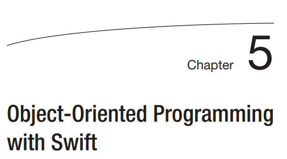

Programación orientada a objetos con Swift
En los últimos 16 años, el mundo de la programación se centró en el paradigma del desarrollo. de la programación orientada a objetos (POO).
En los últimos 16 años, el mundo de la programación se centró en el paradigma del desarrollo. de la programación orientada a objetos (POO).

Amplíe su área de juegos agregando una línea de código que imprima cualquier texto de su elección